Uploading Checklists to eBird
This guide walks you through the complete process of uploading your BirdTalk checklists to eBird, including both immediate uploads and managing saved checklists for later upload.
Upload Options
Option 1: Upload Immediately
When you finish a checklist, you can upload it right away. The process is straightforward:
- Select your checklist by tapping the header or saying "Select checklist"
- Tap the upload button (up arrow pointing to cloud)
- Follow the prompts to complete the upload
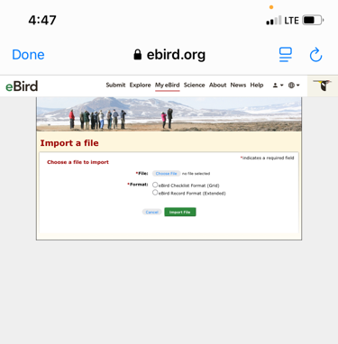
The upload form provides all the necessary fields for submitting your checklist to eBird. Take a moment to review the details before submitting.
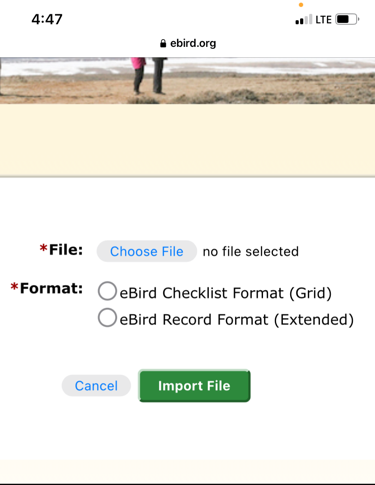
Option 2: Save for Later Upload
Sometimes you might want to save checklists to upload them later. This is useful when you want to:
- Review your observations more carefully
- Wait for a better internet connection
- Upload multiple checklists at once
- Continue birding without interruption
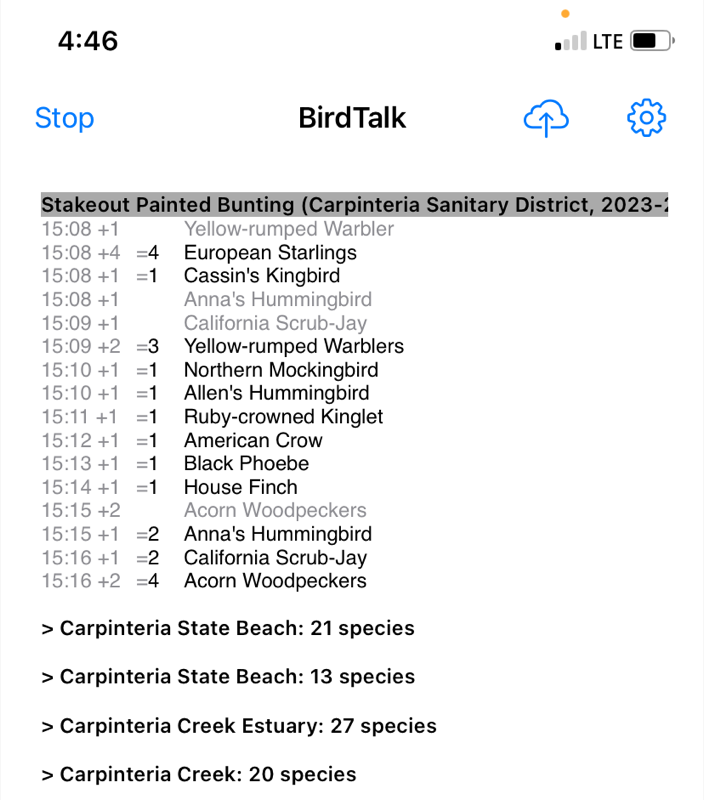
To save a checklist for later:
- Select your checklist
- Say "Upload later" or use the menu options
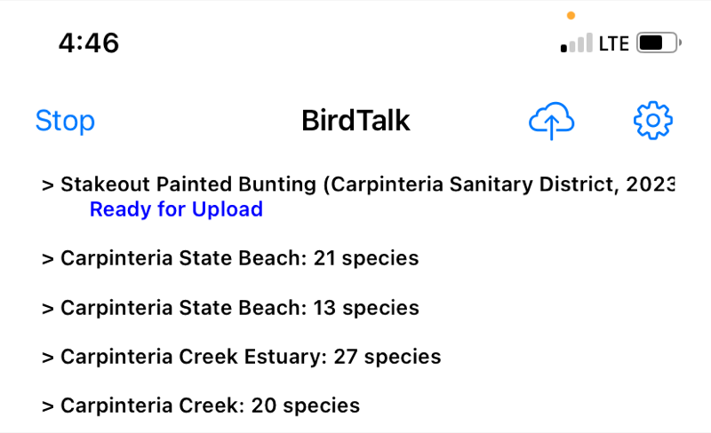
You can mark multiple checklists for later upload, which is particularly useful when you're doing several short counts in one area.
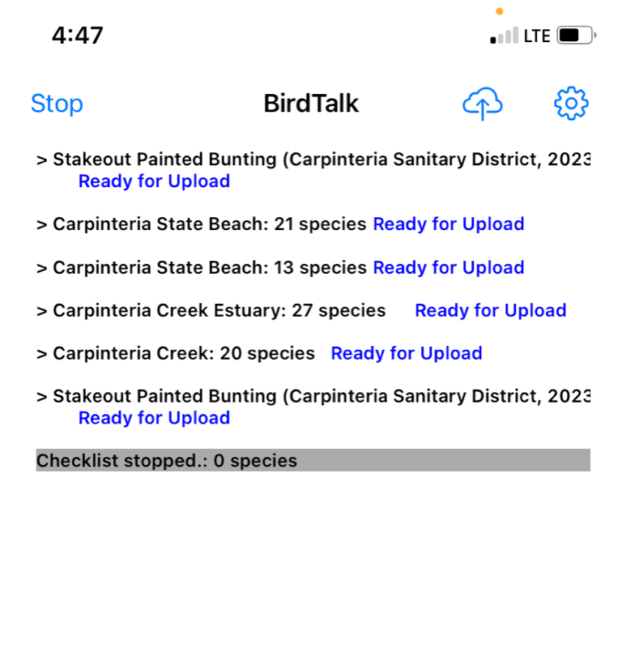
Upload Process
When you're ready to upload your saved checklists, BirdTalk provides clear guidance through each step.
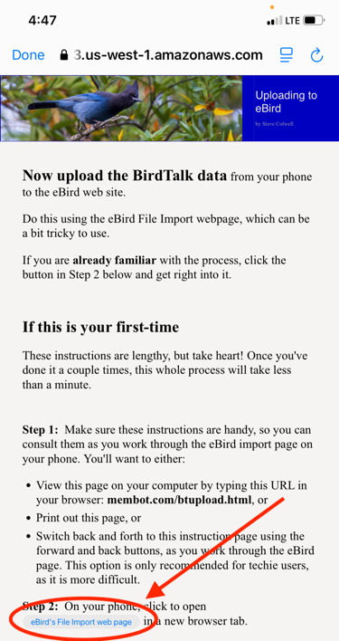
The file selection process is straightforward:
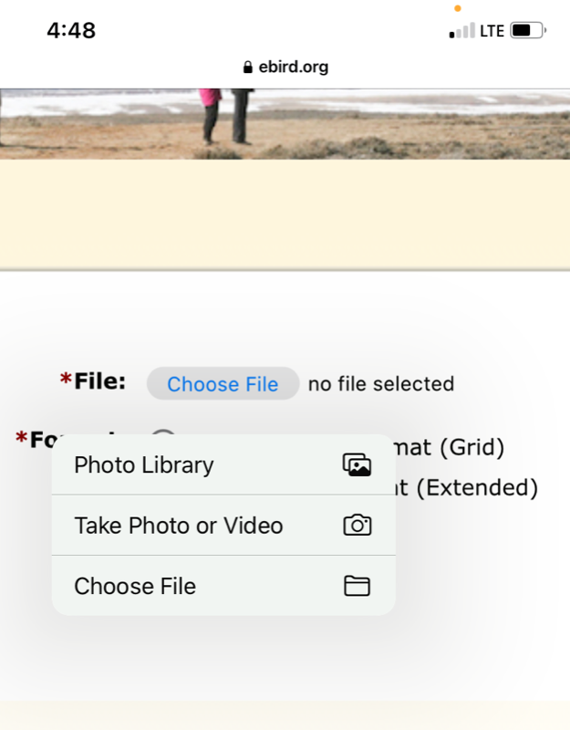
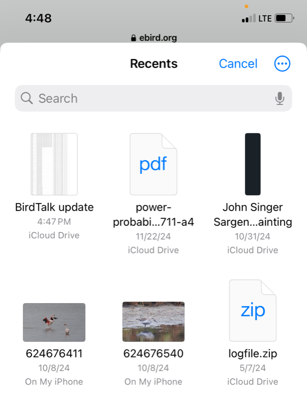
Once you've selected your file, you'll see the upload form ready for submission:
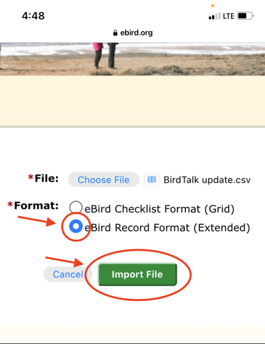
During the upload, BirdTalk shows a progress indicator:
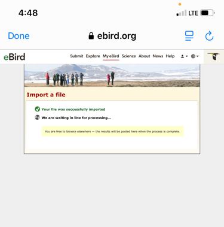
Upon successful upload, you'll see confirmation screens:
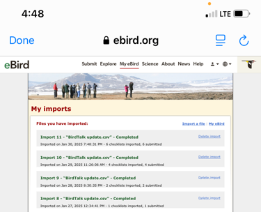
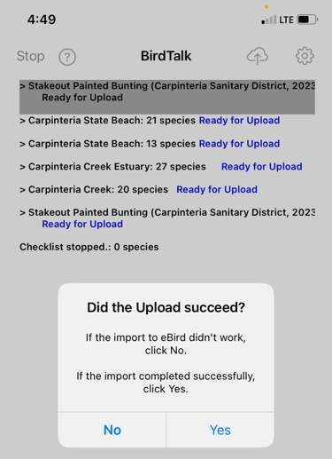
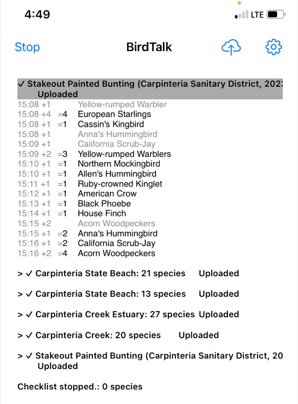
After successful upload, BirdTalk marks the checklists as uploaded and collapses them:
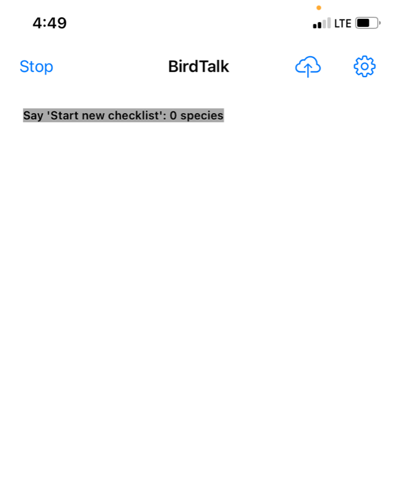
Note: If you need to re-upload a checklist (for example, if there was an error during upload), you can use the "Unfreeze" command to mark it as not uploaded. See the Command Reference for details.
Tips for Successful Uploads
A few key points to ensure smooth uploads:
- Ensure you have a stable internet connection
- Have your eBird credentials ready
- Review your checklists before uploading
- You can upload multiple checklists at once
Troubleshooting
If you encounter issues during upload:
- Check your internet connection
- Verify your eBird credentials
- Make sure all entries are unmarked (no red text)
- Try uploading one checklist at a time if uploading multiple lists fails